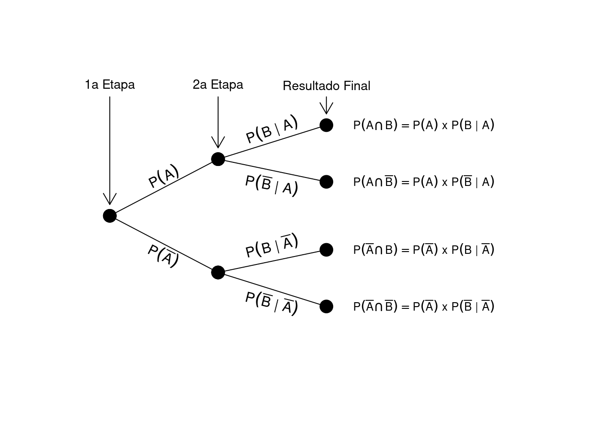

source("scripts/conditional-tree.r")Teorema de Bayes
Teorema de Bayes
Probabilidade condicional
Eventos dependentes
Apresentação do Teorema de Bayes e sua aplicação no cálculo de probabilidades condicionais.
DicaPacotes e funções utilizadas
O Teorema de Bayes provém da definição de probabilidade condicional:
\[P(B|A) = \frac{P(A \cap B)}{P(A)},\]
o que implica:
\[P(A \cap B) = P(A)\,P(B|A).\]
Podemos também escrever:
\[P(A|B) = \frac{P(A \cap B)}{P(B)}, \quad P(A \cap B) = P(B)\,P(A|B).\]
Como \(P(A \cap B) = P(B \cap A)\), segue:
\[P(A)\,P(B|A) = P(B)\,P(A|B),\]
resultando na forma geral do Teorema de Bayes:
\[P(B|A) = \frac{P(B)\,P(A|B)}{P(A)}.\]
1 Teorema da probabilidade total
Considere o esquema de um diagrama de árvore:

Dois caminhos podem levar à ocorrência de \(A\): um em que \(B\) ocorre \(\bigl[P(A \cap B)\bigr]\) e outro em que \(B\) não ocorre \(\bigl[P(A \cap \overline{B})\bigr]\). Por serem mutuamente exclusivos:
\[P(A) = P(A \cap B) + P(A \cap \overline{B}),\]
que pode ser reescrito como:
\[P(A) = P(B)\,P(A|B) + P(\overline{B})\,P(A|\overline{B}).\]
Este resultado é conhecido como Teorema da probabilidade total. Assim, o Teorema de Bayes pode ser expresso por:
\[ P(B|A) = \frac{P(B)\,P(A|B)}{P(B)\,P(A|B) + P(\overline{B})\,P(A|\overline{B})}. \]
2 O problema da detecção de espécies
Suponha um estudo sobre a presença de uma espécie de peixe em riachos costeiros da Mata Atlântica. Ela ocorre em 5% dos riachos \(\bigl[P(O) = 0,05\bigr]\), sendo, portanto, rara. A detecção se dá por captura e identificação taxonômica. Se a espécie está presente, a probabilidade de captura é \(0,99\), havendo \(0,01\) de falso negativo (quando a espécie não é detectada mesmo presente).
Há também a possibilidade de falso positivo: mesmo quando ausente, existe uma chance de 0,10 de a espécie ser registrada erroneamente, devido à semelhança com outra espécie presente na região.
Podemos organizar essas probabilidades em um diagrama de árvore:

As ramificações mostram as bifurcações do evento “espécie presente ou ausente” e, em seguida, “detecção ou não-detecção”. Assim, são possíveis:
- \(P(O \cap D) = 0,0495\)
- \(P(O \cap \overline{D}) = 0,0005\)
- \(P(\overline{O} \cap D) = 0,095\)
- \(P(\overline{O} \cap \overline{D}) = 0,855\)
A probabilidade total de detecção \(P(D)\) é:
\[P(D) = P(O \cap D) + P(\overline{O} \cap D) = 0,0495 + 0,095 = 0,1445.\]
2.1 Razão de verossimilhança, inferência bayesiana e teste de hipóteses
Uma pergunta relevante é:
Ao sabermos de uma possível detecção, podemos ter certeza da presença dessa espécie?
Em inferência estatística, buscamos tomar decisões a respeito de um fenômeno desconhecido com base em dados observados. Aqui, exploramos duas abordagens: verossimilhança e inferência bayesiana.
2.1.1 Verossimilhança: uma medida indireta para \(P(O|D)\)
Se \(P(D|O)\) for alta, a presença da espécie se torna mais plausível, pois a chance de detectá-la quando está presente é elevada. Já \(P(D|\overline{O})\) alto indicaria que a não-ocorrência é mais provável, pois há muitos falsos positivos.
Em estatística, \(P(D|O)\) é análogo à verossimilhança de \(O\) dado \(D\). De modo simplificado, contrastamos duas hipóteses:
- Espécie ocorre e é detectada;
- Espécie não ocorre, mas há detecção falsa.
A razão de verossimilhança (\(RV\)) é:
\[RV = \frac{P(D|O)}{P(D|\overline{O})} = \frac{0,99}{0,10} = 9,9.\]
Interpretamos como sendo cerca de 10 vezes mais provável a hipótese “espécie ocorre” do que “espécie não ocorre” quando há detecção.
2.1.2 Inferência bayesiana: o conhecimento a priori importa?
Na abordagem bayesiana, incluímos a probabilidade a priori de ocorrência, \(P(O)\). Quando recebemos a informação de detecção, atualizamos essa probabilidade, tornando-a \(P(O|D)\).
No exemplo, conhecemos:
- \(P(O) = 0,05\) e \(P(\overline{O}) = 0,95\);
- \(P(D|O) = 0,99\) e \(P(D|\overline{O}) = 0,10\).
Pelo Teorema de Bayes:
\[P(O|D) = \frac{P(O)\,P(D|O)}{P(O)\,P(D|O) + P(\overline{O})\,P(D|\overline{O})}.\]
Substituindo valores:
\[P(O|D) = \frac{0,02 \times 0,99}{0,02 \times 0,99 + 0,98 \times 0,10} \approx 0.17.\]
E:
\[P(\overline{O}|D) = \frac{0,98 \times 0,10}{0,02 \times 0,99 + 0,98 \times 0,10} \approx 0.83.\]
Mesmo com a detecção, a chance de não-ocorrência ainda é maior, favorecendo a hipótese de falso positivo.
2.1.3 Diferenças entre as abordagens
A verossimilhança foca em \(P(D|O)\), enquanto a inferência bayesiana calcula \(P(O|D)\) diretamente, ponderada por \(P(O)\). Se \(P(O) = 0,5\), então:
\[P(O|D) = \frac{0,5 \times 0,99}{0,5 \times 0,99 + 0,5 \times 0,10} \approx 0,91,\] \[P(\overline{O}|D) \approx 0,09,\]
e a razão \(\frac{P(O|D)}{P(\overline{O}|D)}\) será igual a \(RV = 9,9\), tal como na verossimilhança. Porém, quando \(P(O)\) indica uma espécie muito rara, esse valor a priori altera o resultado final de \(P(O|D)\). Por isso, as duas abordagens só coincidem quando usamos uma priori não-informativa (probabilidades iniciais iguais para presença e ausência).